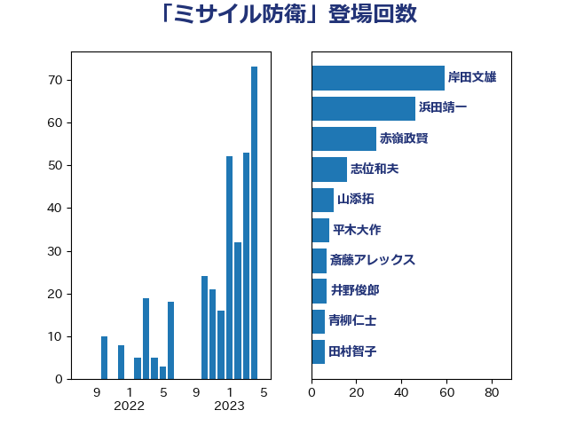

単語「ミサイル防衛」

| 岸田文雄 | 自由民主党 | 59 回 |
| 浜田靖一 | 自由民主党 | 46 回 |
| 赤嶺政賢 | 日本共産党 | 29 回 |
| 志位和夫 | 日本共産党 | 16 回 |
| 山添拓 | 日本共産党 | 10 回 |
| 平木大作 | 公明党 | 8 回 |
| 斎藤アレックス | 国民民主党 | 7 回 |
| 井野俊郎 | 自由民主党 | 7 回 |
| 青柳仁士 | 日本維新の会 | 6 回 |
| 田村智子 | 日本共産党 | 6 回 |
| 木村次郎 | 自由民主党 | 6 回 |
| 宮本徹 | 日本共産党 | 6 回 |
| 音喜多駿 | 日本維新の会 | 4 回 |
| 長妻昭 | 立憲民主党 | 4 回 |
| 鈴木俊一 | 自由民主党 | 4 回 |
| 篠原豪 | 立憲民主党 | 4 回 |
| 玄葉光一郎 | 立憲民主党 | 4 回 |
| 浜地雅一 | 公明党 | 4 回 |
| 國場幸之助 | 自由民主党 | 4 回 |
| 山崎誠 | 立憲民主党 | 3 回 |
| 小池晃 | 日本共産党 | 3 回 |
| 堀井巌 | 自由民主党 | 3 回 |
| 空本誠喜 | 日本維新の会 | 2 回 |
| 穀田恵二 | 日本共産党 | 2 回 |
| 稲田朋美 | 自由民主党 | 2 回 |
| 石井啓一 | 公明党 | 2 回 |
| 玉木雄一郎 | 国民民主党 | 2 回 |
| 浜口誠 | 国民民主党 | 2 回 |
| 岩本剛人 | 自由民主党 | 2 回 |
| 岡田克也 | 立憲民主党 | 2 回 |
| 鬼木誠 | 立憲民主党 | 1 回 |
| 高橋はるみ | 自由民主党 | 1 回 |
| 階猛 | 立憲民主党 | 1 回 |
| 鈴木敦 | 国民民主党 | 1 回 |
| 野上浩太郎 | 自由民主党 | 1 回 |
| 羽田次郎 | 立憲民主党 | 1 回 |
| 米山隆一 | 立憲民主党 | 1 回 |
| 石川博崇 | 公明党 | 1 回 |
| 石井苗子 | 日本維新の会 | 1 回 |
| 石井拓 | 自由民主党 | 1 回 |
| 矢倉克夫 | 公明党 | 1 回 |
| 片山さつき | 自由民主党 | 1 回 |
| 滝波宏文 | 自由民主党 | 1 回 |
| 泉健太 | 立憲民主党 | 1 回 |
| 河西宏一 | 公明党 | 1 回 |
| 柴田巧 | 日本維新の会 | 1 回 |
| 枝野幸男 | 立憲民主党 | 1 回 |
| 林芳正 | 自由民主党 | 1 回 |
| 松野博一 | 自由民主党 | 1 回 |
| 杉尾秀哉 | 立憲民主党 | 1 回 |
| 掘井健智 | 日本維新の会 | 1 回 |
| 岩渕友 | 日本共産党 | 1 回 |
| 山口那津男 | 公明党 | 1 回 |
| 宮澤博行 | 自由民主党 | 1 回 |
| 宮崎勝 | 公明党 | 1 回 |
| 太栄志 | 立憲民主党 | 1 回 |
| 北神圭朗 | 無所属 | 1 回 |
| 前原誠司 | 国民民主党 | 1 回 |
| 佐藤正久 | 自由民主党 | 1 回 |
| 三浦信祐 | 公明党 | 1 回 |